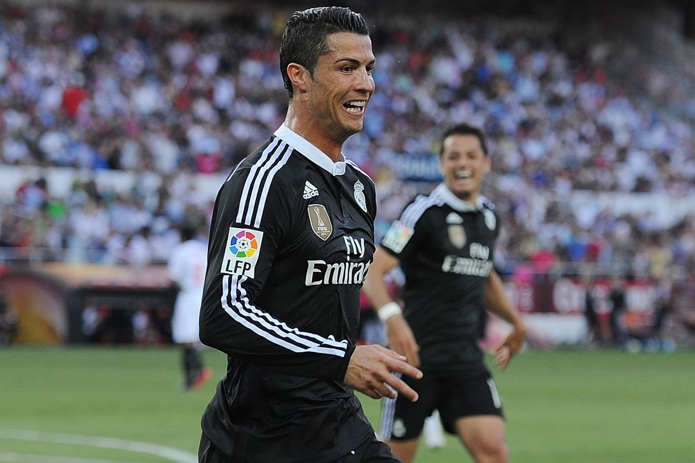

Punch to Krychowiak's Head
Match background: On 2 May 2015, La Liga matchday 35, Real Madrid travelled to face Sevilla at the Sánchez Pizjuán. Madrid trailed leaders Barcelona by two points and the title race was white-hot. Ronaldo hit a hat-trick and led Real to a 3-2 thriller to keep their title hopes alive. Yet the post-match talking point was not his three goals but a piece of off-the-ball violence caught on camera.
The punch: During the match, with no chance of contesting the ball, Ronaldo swung a punch at the back of Sevilla midfielder Grzegorz Krychowiak's head/back. The Polish international had his back to Ronaldo and was entirely unprotected. This clearly exceeded the bounds of competition, was caught by multiple touchline cameras, but the on-field referee took no action — no yellow, let alone a red.
Public outcry: After the match the clip went viral on social media, sparking outrage. Britain's Daily Mirror added it to a feature on 'Ronaldo's controversial escapes from punishment', calling it a textbook case of 'immunity by reputation'. Fans fumed: 'If an unknown player did this, it would be a red and a ban at minimum.' Sevilla was also unhappy with the referee's blind eye, but the La Liga disciplinary committee took no retrospective action.
A pattern of behaviour: The Mirror ranked the Krychowiak punch alongside elbows on Alves and a flying kick at a keeper as a signature 'lucky discipline' moment for Ronaldo. Analysis suggested Ronaldo, as a global superstar, long enjoyed the referee's 'umbrella of reputation' — his provocative actions dismissed as 'venting emotion' rather than violence. Such treatment was virtually never extended to Messi, and is a key reason their disciplinary records diverge so sharply.
Opponent's attitude: Krychowiak himself did not play up the incident in subsequent interviews, but told South African media he was 'very angry' after learning of Ronaldo's terrifying goal-scoring record against Sevilla, hinting at clear personal enmity between the two. As a Polish international and Sevilla's holding midfield anchor, Krychowiak was known for hard-nosed defending, but facing Ronaldo's underhand jab he had no choice but to swallow the referee's silence.
Broad comparison: Comparable actions in the Premier League or Bundesliga typically start at a straight red. Ronaldo's punch was harder and more targeted (the back of the head), yet he walked away unscathed, further proof of the double standard in officiating of elite stars.
Conclusion: An unpunished punch that captures Spanish football's leniency with its stars and Cristiano's own violent tendencies.